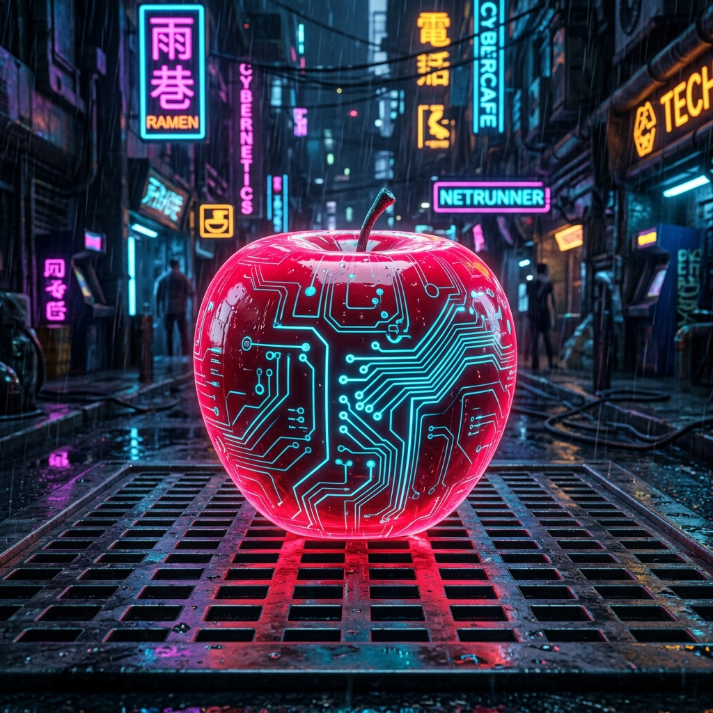
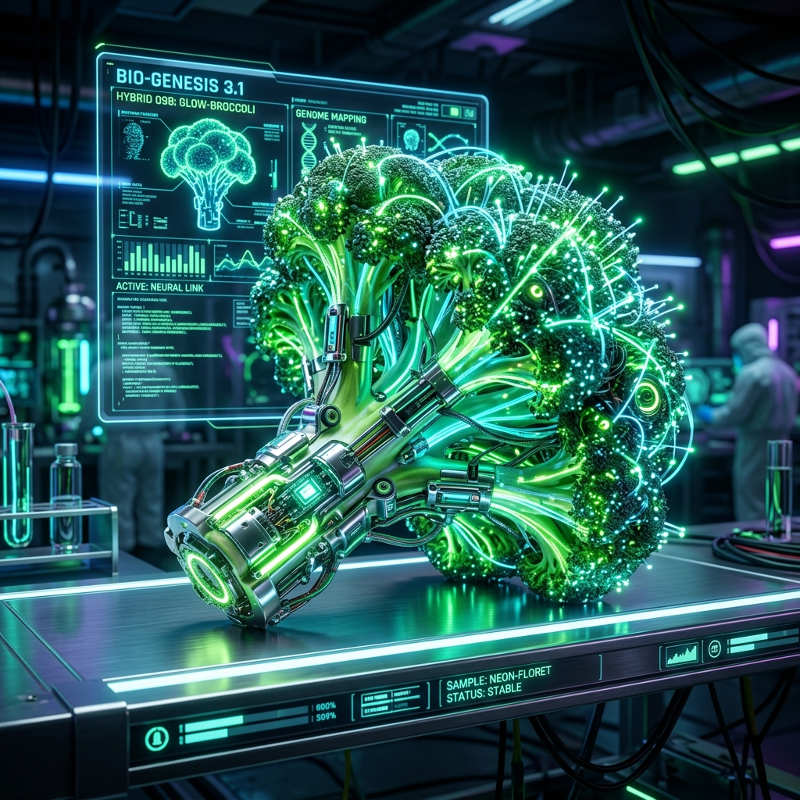
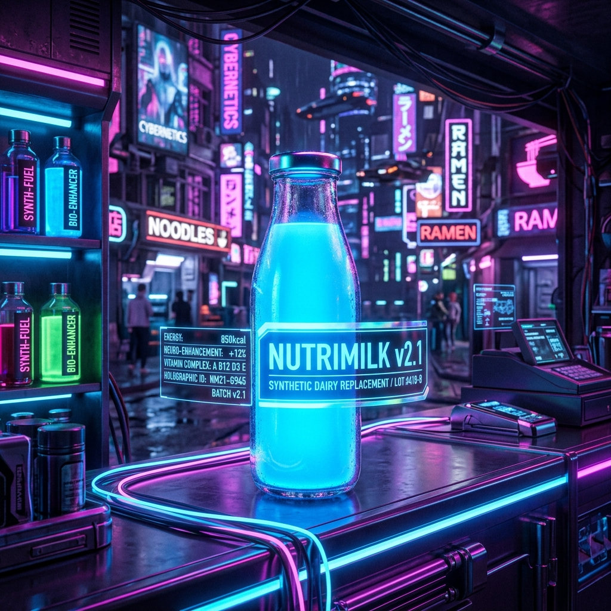

Praktik Terbaik Penggunaan Unit Persen (%) pada Layout Web

Apel merah segar manis langsung dari perkebunan organik lokal.

Brokoli segar bebas pestisida, kaya serat dan vitamin C untuk keluarga.

Susu sapi murni pasteurisasi, tinggi kalsium tanpa bahan pengawet.